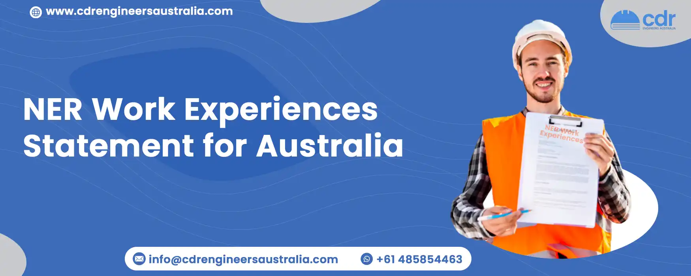

NER Work Experiences Statement for Australia
National Engineer Register (NER) is a voluntary registration service provided by Engineers Australia in order to recognize professional qualifications and experience. It provides engineers with access to exclusive resources and recognition of their professional development. Through NER, engineers can also access professional indemnity insurance, discounts on career-related services, and Exclusive Services that allow them to demonstrate their competence to potential employers.
When writing the NER statement, keep the following points in mind:
- Organize the work experience in chronological order.
- Highlight recent and job-related experience that matches the required skills.
- Showcase experience in your field of practice that spans at least 5 years.
- List key accomplishments and roles you have played. If the work experience is too long, summarize the past positions briefly.
What to include in your Work Experience Statement?
- Must have accumulated a minimum of 5 years of engineering experience in the last 7 years to apply for NER registration for Skilled Migration to Australia.
- Assessment will verify technical competencies and ethical practice in the area of seeking registration
- Acquired Competence Self
- An assessment Checklist needs to be filled out, highlighting roles, responsibilities, and key achievements in the work experience statement for engineers.
For each position held in the last seven (7) years, include:
- Employer’s name, location, and address
- Position title, start and finish dates
- Description of role and responsibilities
Key achievements
- Key achievements include engineering tasks demonstrating skills, knowledge, and abilities, and accomplishments listed in the acquired competence self-assessment worksheet
Projects, products, systems, programs, or services worked on
- Situations, problems, and opportunities
- Quality improvements to which you contributed
- What specialized skills or knowledge did you utilize? What results did you achieve? Describe the actions you took to address a situation, including any innovative and creative solutions. Were there any additional duties that you fulfilled?
Competence Self-Assessment Worksheet (Optional)
You have the option to upload your self-assessment worksheet with your NER application. This worksheet will assess your competence in four areas of engineering: your commitment, obligation to the community, value in the workplace, and technical proficiency.
To assess each competence, assign a rating of 'Developing', 'Functional', or 'Proficiency'.
- 'Developing' means you are still learning an aspect of practice with help from more experienced people and possibly supervision.
- 'Functional' means you have a basic capability to practice independently at an acceptable standard without help or supervision, and
- 'Proficient' means your capability to practice independently has been recognized formally through peer review and you can help others develop their competence. Competence Self-Assessment Worksheet (optional)
Professional Referee Details
- Referees must have known you for at least 12 months
- Must have an engineering qualification and 5+ years of experience in your areas of practice
- Preferably Chartered members of Engineers Australia or equivalent
- 1 referee is to be from the current employer. Another referee can be from the previous employer, if the employer was within the last 5 years or an external mentor. It cannot be just a friend from the workplace or elsewhere.
Please provide the following details for each referee: title, first name, last name, organization, job title, professional connection, phone number, mobile number, and email address. You can always Contact Us for a free consultation if you are finding it difficult.
Professional statement of the referee by statutory declaration
If you have relocated to a foreign country and are unable to provide a reference or there is no available reference for a genuine reason, Engineers Australia will accept a statutory declaration in exceptional circumstances. The statement should confirm your qualifications, abilities, and why you are eminently suited for the role you are applying for. However, Engineers Australia reserves the right to not accept the statutory declaration.
Fees
- EA members pay a price of AU$335.50 (GST inclusive) which includes registration on the NER and a current membership subscription
- Non-members are charged AU$555.50 (GST inclusive) for listing on the NER for the current financial year up to June 30th, plus an additional annual fee of AU$166 (GST incl.)
- Overseas EA members are charged AU$305 (GST incl.) for registration on the NER for the current financial year up to June 30th
- NER renewal fee is charged at AU$97 (GST incl.) annually
- The chartered assessment fee of the EA members is charged similarly to the subscription fee for the entire year
Anyone who has been a chartered member of Engineers Australia, or who has been a member of Engineers Australia, in a certain occupational category, or who has five years of relevant engineering industry experience over the past seven years in their field of practice is eligible to register on the NER Australia.
Statement of Work Experience
If you are uncertain about how to write a statement of work experience, the National Employment Resources (NER) provides examples of experience statements of work. They claim to have writers with five years of experience in statement competency writing. NER Australia offers to consult writing services concerning these statements, guaranteeing a 100% success rate. They also provide several statements of work experience samples for reference purposes only. It is not allowed to directly submit these samples; however, they are available for contact when needing help with writing statements on work experiences.
Conclusion
Our team of experienced and highly-skilled professionals at CDR Engineers Australia dedicate themselves to providing the best writing service to all applicants. Our expertise and knowledge in NER work experience statements for Australia guarantee that your statement is unique, accurate and of the highest quality. If you have any questions or concerns, do not hesitate to reach out and let us know - we would be more than happy to assist you.